R1 · The player's profile, and closing the account¶
| Who | A player |
| Test id | R1 |
| Needs | the local stack (a disposable player is made and then closed) |
| Catalogue | R-01 … R-08, R-10 in CATALOGUE.md |
What this flow is for¶
The profile is what other players see (a first name, a position, a level, a neighbourhood) and where the player controls their own data: language, light/dark, and, at the end, deleting the account. This journey changes each of those and proves the changes stick, that a cancelled edit leaves nothing behind, and that deleting the account really ends access.
The flow at a glance¶
flowchart TD
A[Profile] --> B[Edit profile]
B --> C{Save or cancel?}
C -->|Save| D[Profile shows name, position,<br/>level, area]
C -->|Cancel| E[Nothing is kept]
B --> F[Language: English]
F --> G[Profile opens in English<br/>notifications will be English]
A --> H[Appearance switch<br/>Light or Dark]
H --> H1[Header button agrees]
A --> I[Delete account]
I --> J[Page lists what is erased<br/>and what is kept, and why]
J --> K[Request deletion]
K --> L[Signed out on every device]
L --> M[Signing in with that address:<br/>«This account is closed»<br/>with the erasure date]Step by step (from the recorded run)¶
Step 1. A player who has just joined signs in. Their profile was filled in when they signed up.
on screen: a new player signs in
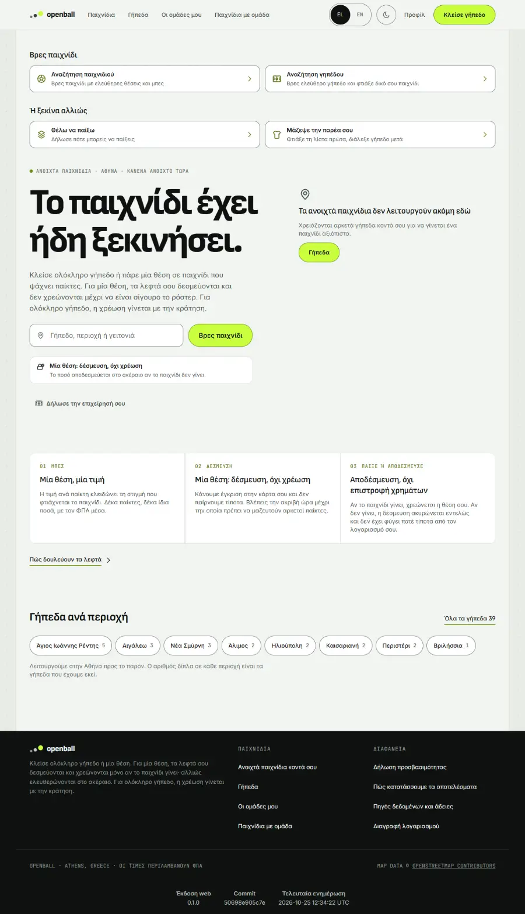
Step 2. The profile shows their name, position, level and neighbourhood, and «Your record on the pitch»: games played, bookings, times they left, all zero so far, with a sentence explaining that zeros do not mean a lost appearance. At the side: appearance (light/dark), «Register your business», language, accessibility, data sources, delete account, and who they are signed in as.
on screen: they open their profile from the menu
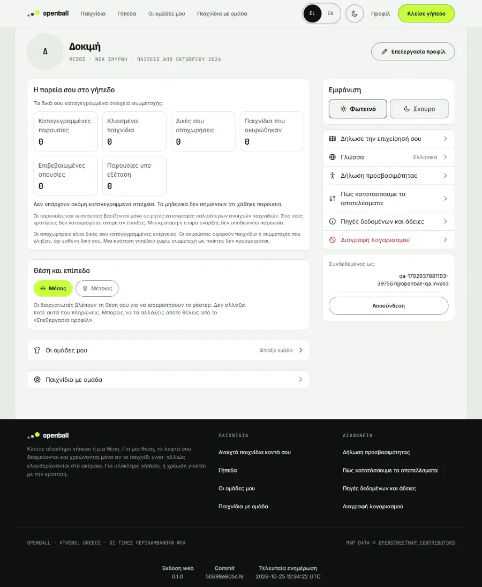
Same moment, in the dark theme and on a phone (390 px):
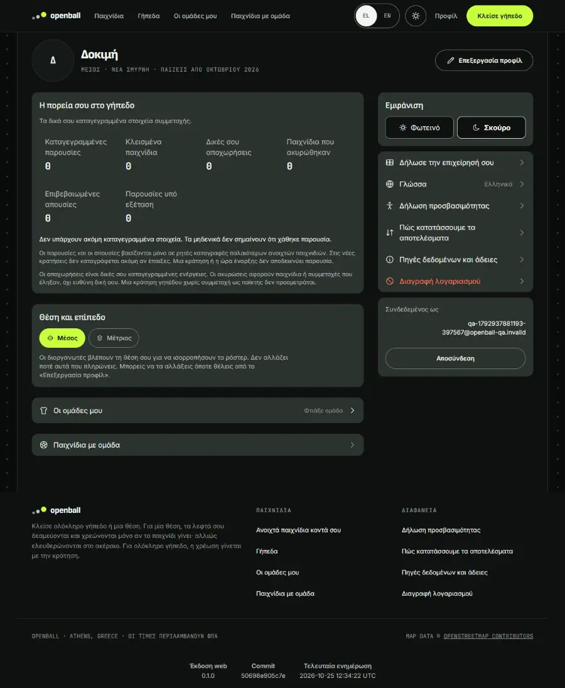
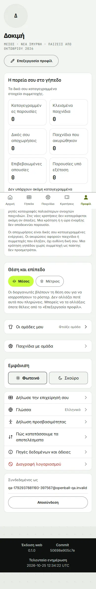
Step 3. In «Edit profile» they type a new first name (only the first name is asked for, never a surname), add «Forward» to the positions they play, choose the level «Advanced» and change the neighbourhood. Date of birth and e-mail are shown but cannot be changed here, and the page says why.
on screen: they change their name, position, level and area
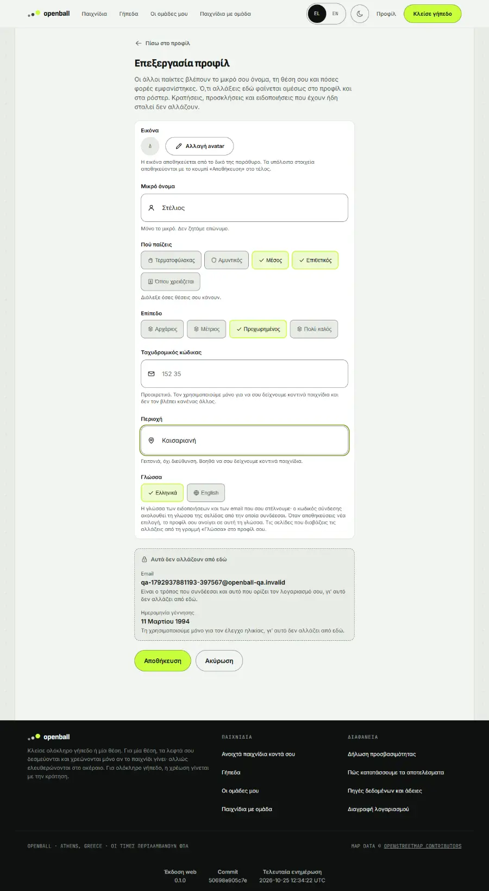
Same moment, on a phone (390 px):
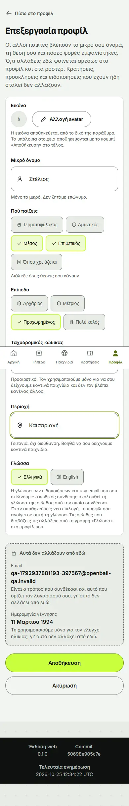
Step 4. They press «Save». The profile now says Στέλιος, Advanced, Καισαριανή.
on screen: they save and the profile shows the change
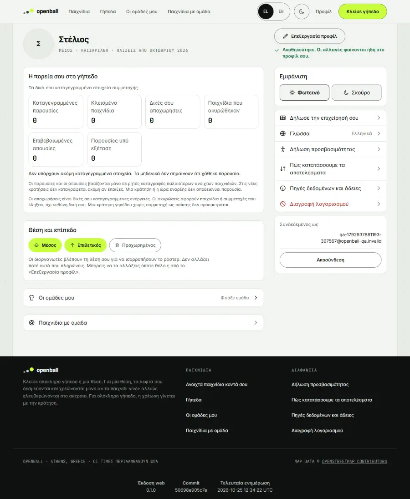
Step 5. They start typing a different name and then press «Cancel». The profile still says Στέλιος: a cancelled edit leaves nothing behind.
on screen: an edit that is cancelled is not kept
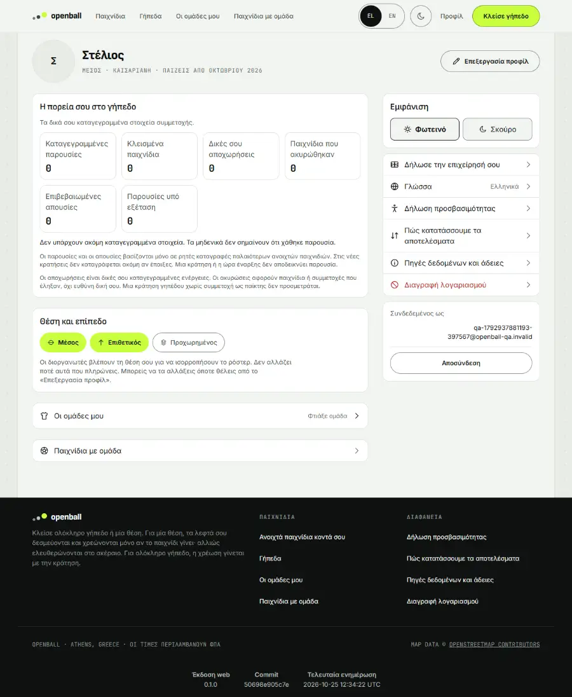
Step 6. In «Language» they choose English and save. The profile opens in English straight away (the e-mails and notifications they get will be in English too), and it keeps their Greek first name.
on screen: they choose English for notifications and pages
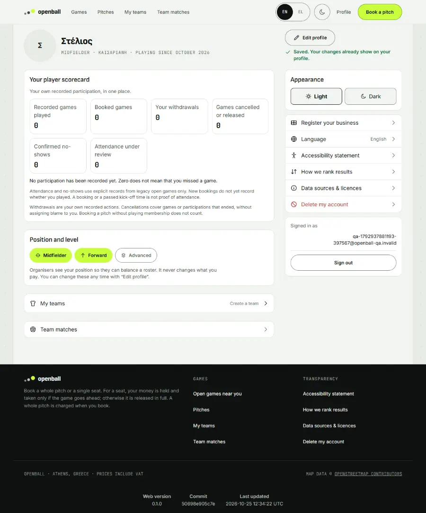
Step 7. On the profile the «Appearance» switch (Light | Dark) shows which is on. Pressing «Dark» turns the page dark and the moon in the header turns into a sun: the two controls always agree.
on screen: the profile has its own light/dark switch
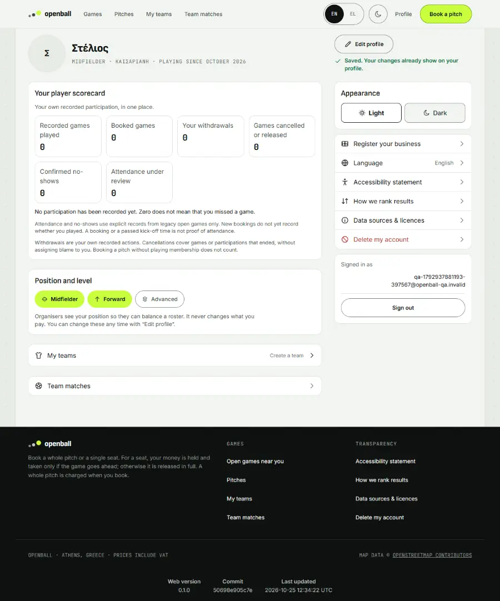
Step 8. From the profile's side menu they open «Delete account». The page lists, in plain words, what is erased (name, e-mail, phone, date of birth, profile, reliability score, every active session) and what is kept and why (bookings and payments without the name, because tax law requires the accounts; anonymous past seats; team memberships without the name), and says it cannot be undone.
on screen: they read what deleting the account would do
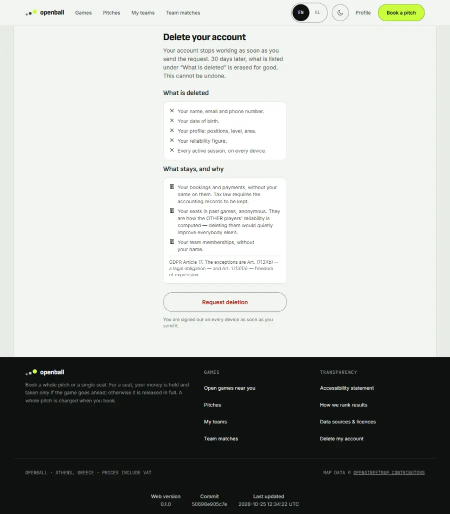
Step 9. They press «Request deletion». The account stops working at once and they are signed out of every device; opening the profile now only asks them to sign in.
on screen: they ask for the deletion and are signed out everywhere
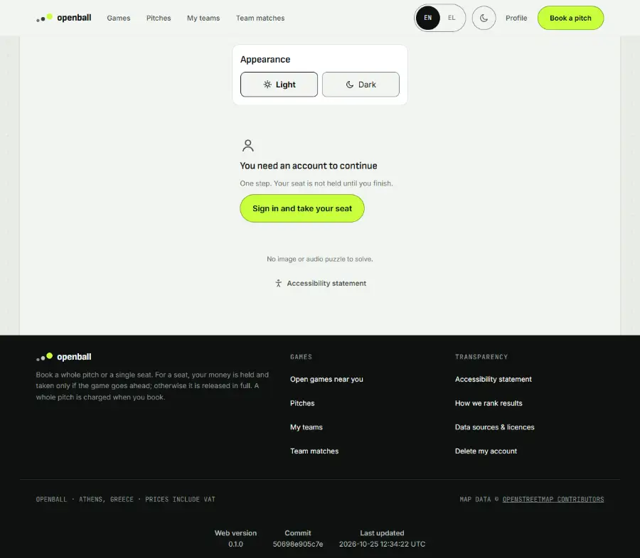
Step 10. If they try to come back with the same e-mail address and the right code, they are not let in. A page says «This account is closed» with the date it was closed and the date its data will be erased (30 days later), and offers «Home» and «Sign in with another account», rather than silently making a new account or showing a vague error.
on screen: signing in again with that address is refused, with a sentence that says why
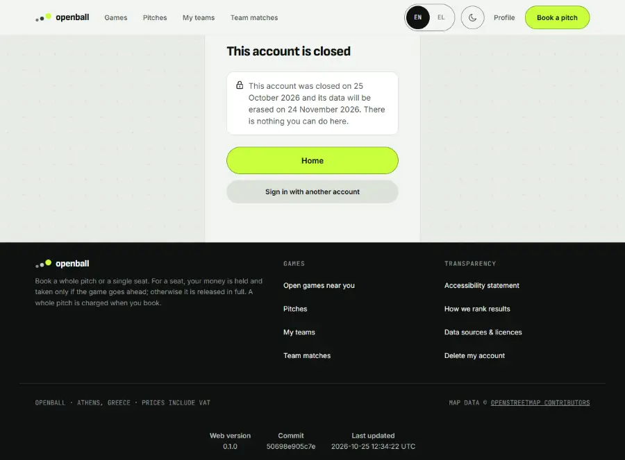
What you should see¶
- The profile shows a record on the pitch with zeros explained («zeros do not mean a lost appearance»).
- Only the first name is asked for; date of birth and e-mail are shown but cannot be changed here, with the reason.
- Saving changes the profile at once; cancelling changes nothing.
- Choosing English changes the language of the pages and, from then on, of the e-mails and notifications.
- Deleting is explained before it is asked for: what is erased (name, e-mail, phone, date of birth, profile, reliability score, sessions) and what stays and why (accounting records without the name, anonymous past seats, team memberships without the name). It cannot be undone.
- Afterwards the same address cannot get in: the page says the account is closed, on which date, and when its data goes.
Edge cases and how they behave¶
| Case | Behaviour |
|---|---|
| Cancel an edit | The old values stay |
| Incomplete postcode | Refused in words (see S1) |
| Closed account signs in again | «This account is closed» with both dates, and «Home» / «Sign in with another account» |
| Change the picture | Not walked here (needs a file chooser); see the catalogue |